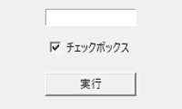

実行例
import tkinter as t
def func(event):
ent.delete( 0, t.END )
ent.insert( 0, 'Trueです。' if var.get() else 'Falseです。' )
app = t.Tk()
app.title( 'テスト' )
app.geometry( '200x120' )
ent = t.Entry( justify = t.CENTER )
ent.place( x = 50, y = 10, width = 100 )
var = t.BooleanVar()
var.set( True ) #初期値をTrueに設定
che = t.Checkbutton( text = 'チェックボックス', variable = var )
che.place( x = 50, y = 40 )
but = t.Button( text = u'実行' )
but.place( x=50, y=80, width = 100 )
but.bind( '<Button-1>', func )
app.mainloop()
実行結果（gif画像）
